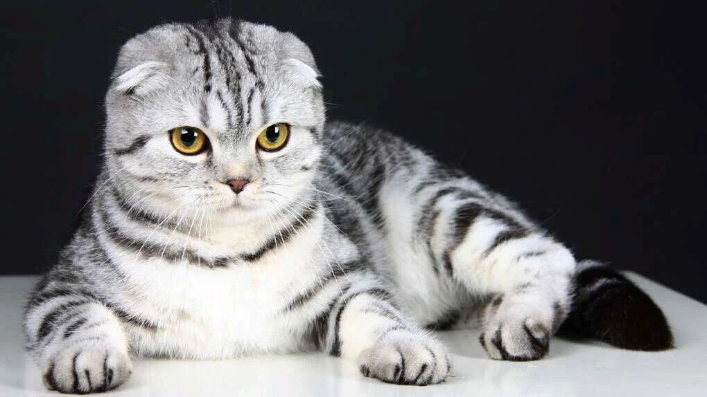

О породах кошек:
В мире существует великое множество породистых и беспородных котов. Однако только у 3 % всех кошек есть официальная родословная. Людям, которые интересуются фелинологией, наверняка будет интересно узнать, сколько всего пород существует на планете, и по какому принципу происходит классификация пушистых питомцев.
Впервые породистых кошек начали разводить в Азии исключительно в декоративных целях, в то время как в Европе эти животные все еще использовались для уничтожения грызунов. Именно поэтому их классифицируют по внешнему виду, а не по сфере деятельности, как собак.
В настоящий момент наибольшее количество пород кошек в мире зарегистрировала Всемирная федерация кошек: 74 вида.
Наиболее популлярные породы:
- Сиамская
- Канадский сфинкс
- Русская голубая
- Шотландская вислоухая (скоттиш-фолд) 
- Американская короткошерстная кошка
- Британская короткошерстная кошка
- Рэгдолл
- Мейн-кун
- Персидская кошка
- Экзотическая кошка (кот экзот)
Как цвет кошки влияет на характер
Таблица соотношения человеческих и кошачьих лет
| Кошачий возраст | Возраст человека |
|---|---|
| 1 год | 15 лет |
| 2 года | 24 года |
| 3 года | 28 лет |
| 4 года | 32 года |
| 5 лет | 36 лет |
| 7 лет | 44 года |
| 8 лет | 48 лет |
| 9 лет | 52 года |
| 10 лет | 56 лет |
Особенности поведения кошек
Кошка выгибает спину
Кошка трётся о ногу или мебель
Ползание по-пластунски

Подергивание и махание хвостом
Полезные ссылки
МурлыкаCats-портал
Котклуб.ру
KOSHKAnasha